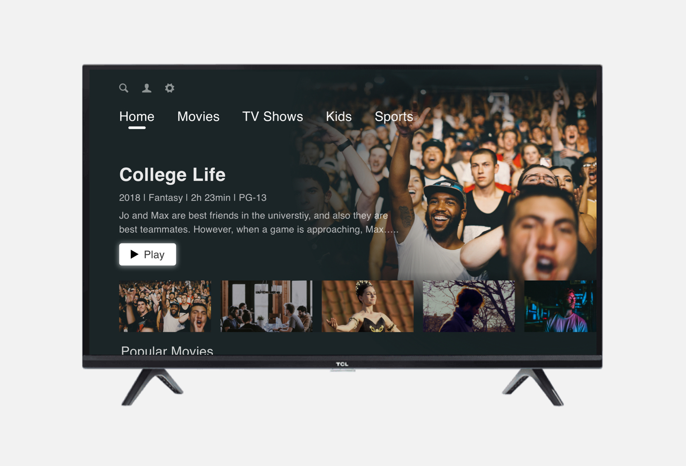
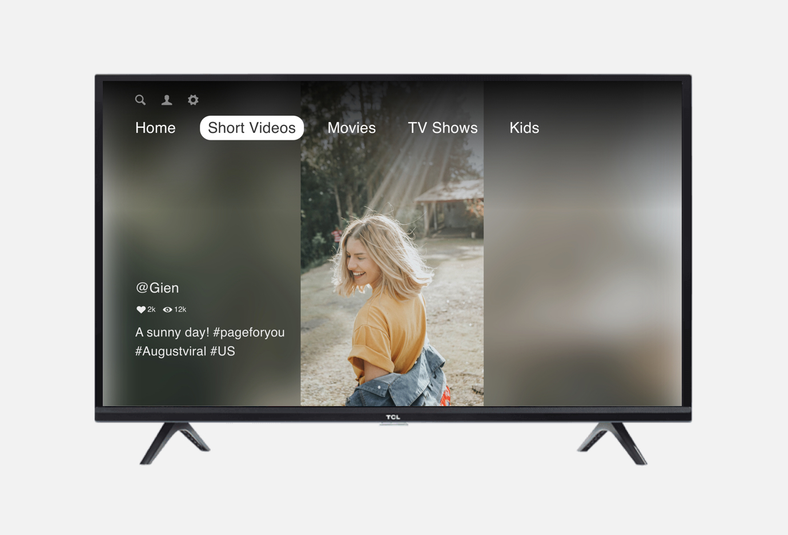

Hello! I am Jiaqi / Ja-chi, a product designer.Currently, I study HCI at the University of Michigan. Previously, I interned at TCL and Lantu Tech.
At TCL, I designed TCL Channel a steaming platform on smart TVs and Game Zone a mini-game platform on TCL overseas smartphones (Alcatel). At Lantu Tech, I designed SaaS software. The previous internships made me realize that I enjoy visualizing ideas and designing digital products to solve users’ problems.
My design projects are as follows. If you want to talk about the projects with me, feel free to reach out to me at jiaqzhou@umich.edu.
TCL Channel · User Flow Refinement Internship Project / UX Design View the Project

Alcatel · Game Zone Internship Project / Requirement Definition / Mobile Design View the Project
TCL Channel · Short Videos Internship Project / UX Design View the Project